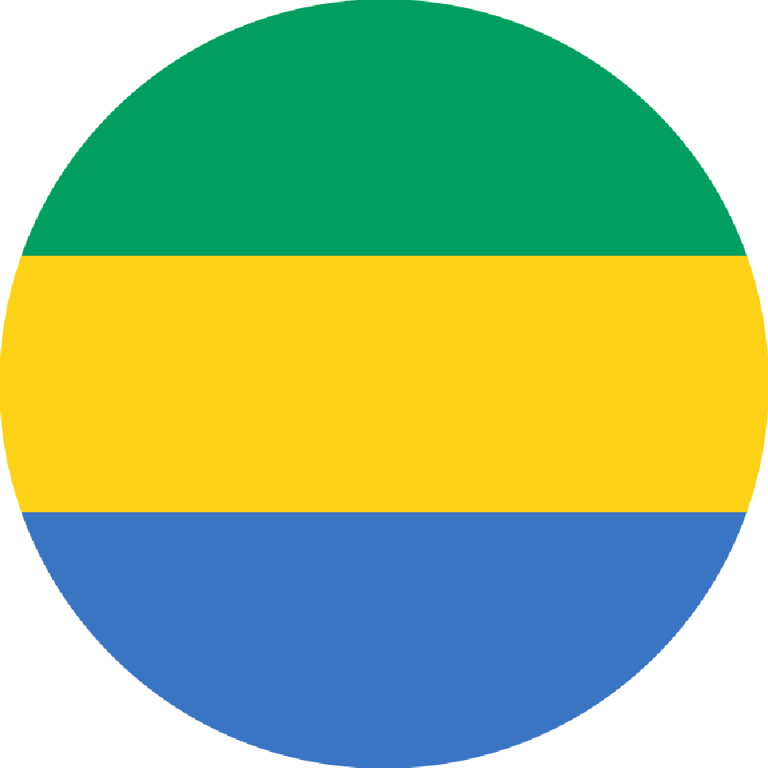
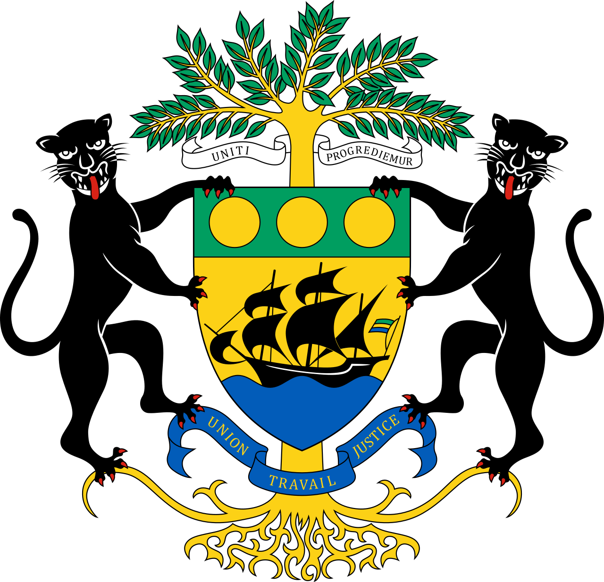
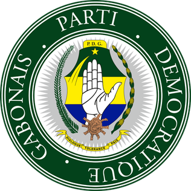
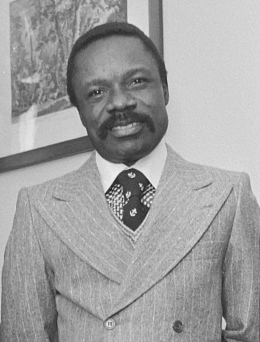
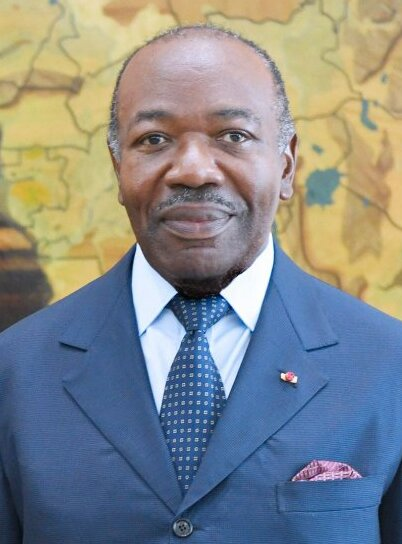
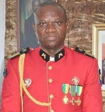

GABONESE REPUBLIC


"Union, Work, Justice"
FIRST PRESIDENT


- Léon M'ba
- Political Party P.D.G.
- In Office From: 12 February 1961.
- In Office until: 28 November 1967.
- Born: 9 February 1902.
- Died: 28 November 1967.
- Aged: 67 years Old.
SECOND PRESIDENT

- Omar Bongo Ondimba
- Political Party P.D.G.
- In Office From: 2 December 1967.
- In Office Until: 8 June 2009.
- Born: 30 December 1935.
- Died: 8 June 2009.
- Aged: 73 Years Old.
THIRD PRESIDENT

- Ali Bongo Ondimba.
- Political Party P.D.G.
- In Office From: 16 October 2009.
- In Office Until: 30 August 2023 [Deposed].
- Born: 9 February 1959.
- Aged:64 Years Old.


Transitional President of Gabon_ Incumbent
- Brice Clotaire Oligui Nguema.
- Political Party Military
- In Office From: 4 September 2023.
- Born: ?- ?- 1975.
- Aged: 47-48 Years Old.